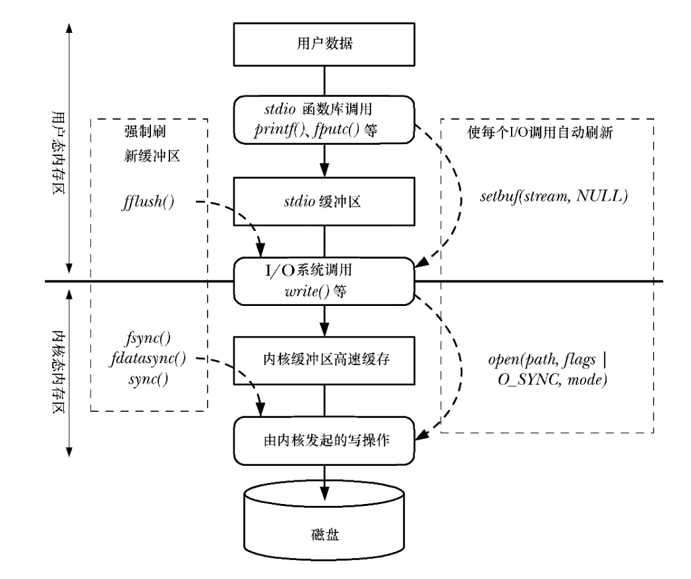

一图流

从 printf 到落盘：理解 I/O 缓冲
程序打印一行文字，终端上立刻出现了；把同一程序的输出重定向到文件，等了一会儿却还看不到。即使文件中已经能读到这行文字，也不代表突然断电后它还在。这里至少有两个不同的缓冲位置：C 标准库在进程内维护的流缓冲区，以及内核管理普通文件内容的页缓存（page cache）。本文以 Linux 上的普通文件为主线，解释数据何时跨过各层边界，以及调用者究竟获得了什么保证。
一次写入经过 stdio 和页缓存
假设程序通过 FILE * 向普通文件写入：
程序中的数据
│ fprintf / fwrite
▼
进程内的 stdio 缓冲区
│ 缓冲区满、显式 fflush 等
▼
write() 系统调用
│ 常规文件 I/O
▼
内核页缓存中的文件页（可能被标为脏页）
│ 后台回写或显式同步
▼
文件系统与存储设备fprintf() 把数据交给 FILE * 流；它是否马上调用 write()，取决于该流的缓冲模式。常规的文件 write() 通常经过页缓存：内核把数据纳入文件的缓存视图，稍后再回写到存储设备。因此，write() 成功返回并不等于已经落盘。反过来，read() 读取普通文件时也通常利用页缓存：命中时可从缓存取得内容，未命中时需要从存储端取入。这里的图是普通文件的常规路径；终端、管道、网络套接字各有自己的内核队列或设备语义，不能把它们都画成“内核页缓存 → 磁盘”。
缓冲的目的也不同：stdio 缓冲把多次小的库调用合并，减少系统调用次数；页缓存复用文件数据，并允许内核安排回写。两层之间的边界是系统调用，页缓存和持久存储之间的边界是同步完成。
为什么终端有输出，重定向文件却暂时没有
以 GNU C 库的常见默认行为为例，连接交互式终端的 stdout 通常是行缓冲，写入换行符会促使它提交已缓冲的输出；重定向到普通文件或管道后，stdout 通常变成全缓冲，可能要等缓冲区满、显式刷新或正常关闭流才提交。同一段 printf("ready\n") 因此会在终端上较快出现，重定向后则可能暂时留在进程内。这个差异是 stdio 输出缓冲 的选择，不是终端输入侧的行规程；输入侧如何按行交给程序，可参见 终端的 line discipline。
| 模式 | 输出何时交给底层接口 | 常见用途 |
|---|---|---|
| 全缓冲 | 缓冲区满、fflush()、正常关闭等 | 普通文件、重定向后的 stdout |
| 行缓冲 | 遇到换行，或满足其他刷新条件 | 面向交互终端的 stdout |
| 无缓冲 | 尽快提交每次输出 | 需要及时交给底层接口的流 |
这些是流的行为，不应推成“每次 printf() 恰好对应一次 write()”。程序可以在流开始 I/O 前用 setvbuf() 选择模式。若只是想让用户及时看到提示，fflush(stdout) 比依赖是否有换行或是否连接终端更明确：
printf("请输入名字：");
fflush(stdout);fflush() 刷新的是 进程内的 stdio 输出缓冲区。对于文件，它让数据交给底层写入接口；它本身并不要求内核把数据同步到持久存储。
write() 成功之后，数据到了哪里
对常规的 Linux 普通文件 I/O，可以把写入结果分成三个问题：
- 程序是否已把字节交给内核？
write()返回非负值时，返回值是本次实际写入的字节数；它可能小于请求的字节数，调用者需要处理短写。 - 其他进程现在能否读到？ 对同一普通文件的常规读写，完成的写入通常已反映在内核维护的文件视图中；这仍只是“当前可见”。并发写入、缓存于另一个进程的 stdio 数据，以及网络文件系统等情形需要另看具体语义。
- 系统崩溃或断电后是否还能找回？ 普通
write()成功不提供这个保证。内核可能还没有回写；写回错误甚至可能在之后的write()、fsync()或close()才被报告。
所以，“输出没出现”首先看 stdio 是否刷新；“文件里能读到，却担心掉电”则看是否完成了持久化同步。正常 fclose() 会处理流中的待输出数据，但仅关闭文件也不能替代 fsync() 对持久化的要求。
fdatasync()、fsync() 与同步写标志保证什么
假设向日志末尾追加一条记录。要在进程中明确要求其持久化，顺序应是：先让 stdio 把记录交给内核，再同步文件描述符。例如下面的核心步骤（省略打开和关闭文件的错误处理）：
if (fprintf(fp, "record\n") < 0) { /* 处理错误 */ }
if (fflush(fp) == EOF) { /* 处理错误 */ }
if (fsync(fileno(fp)) == -1) { /* 处理错误 */ }第一步仍可能只改动 stdio 缓冲区；第二步把它送往内核；第三步等待该文件所需的数据和元数据同步完成。实际代码必须检查每一步的结果，不能因为最后调用了 fsync() 就忽略先前写入失败。
fdatasync(fd) 与 fsync(fd) 的区别在哪些元数据也必须同步：
| 接口 | 调用返回前要求完成的内容 | 适合的问题 |
|---|---|---|
fdatasync(fd) | 文件数据，以及日后正确读取这些数据所必需的元数据 | 只关心记录内容能否恢复 |
fsync(fd) | 文件数据，以及相关文件元数据 | 还要求文件元数据一并同步 |
O_DSYNC | 每次相关写入按数据完整性同步语义完成 | 不想每次另调 fdatasync() |
O_SYNC | 每次相关写入按文件完整性同步语义完成 | 不想每次另调 fsync() |
比如追加数据使文件变长时，新文件大小是将来读到这段数据所必需的元数据，fdatasync() 也要同步它；修改时间这类元数据不影响正确读出数据，fdatasync() 不要求一并同步，fsync() 则要求。O_DSYNC 和 O_SYNC 是打开文件时指定的写入完成语义，分别近似于每次写入后执行对应的同步操作；若写入先停在 stdio 缓冲区，它们尚无机会作用于那批字节。
还有一个不同的对象：若程序新建文件或改名，只同步文件本身未必保证“文件名 → 文件”的目录项已经持久化。需要按操作流程同步相关目录。sync() 的作用范围则是系统中的文件系统脏数据；Linux 会等待相关 I/O 完成，但它不是针对某个记录的精确提交接口，也不会替应用刷新尚在 stdio 中的字节。
原稿提到的 O_RSYNC 来自同步 I/O 的标准术语，但 Linux 未实现 O_RSYNC 语义，不应把它写成 Linux 上可依赖的读前同步选项。
O_DIRECT 绕过的是哪一层
O_DIRECT 主要改变普通文件 I/O 与内核页缓存的关系：在支持它的文件系统和条件下，数据可在用户空间缓冲区与存储路径之间直接传输，绕开常规页缓存。这常用于应用自己管理缓存的场景，例如某些数据库。它并不取消用户空间的 stdio 缓冲；讨论 O_DIRECT 时，通常直接使用文件描述符和 read() / write()。
直接 I/O 对缓冲区地址、I/O 长度、文件偏移量可能有对齐要求，规则随文件系统和内核版本变化；不满足要求时，操作可能报 EINVAL，也可能退回常规缓冲 I/O。Linux 6.1 起可尝试用 statx() 的 STATX_DIOALIGN 查询文件的相关约束，但是否支持查询也取决于文件系统。
绕过页缓存不等于获得持久化保证。 Linux 的 open(2) 手册明确指出，单独的 O_DIRECT 不提供 O_SYNC 的保证；若需要同步写入语义，应另外使用同步机制。也不要把它简单理解为“用户缓冲区直接写进磁盘”：文件系统和设备仍参与传输与完成过程。
该在哪一层采取行动
| 想解决的问题 | 应检查或使用的接口 |
|---|---|
| 终端提示尚未出现 | fflush(stdout)；核对 stdout 的缓冲模式 |
FILE * 写出的内容尚未交给内核 | fflush(fp)，并检查返回值 |
| 记录已交给内核，但需要崩溃后可恢复 | fdatasync(fd) 或 fsync(fd)；也可按需求使用 O_DSYNC / O_SYNC |
| 新文件的名字也必须在崩溃后存在 | 同步文件后，按操作流程同步目录 |
| 应用自己管理缓存，希望避开页缓存 | 评估 O_DIRECT 的支持、对齐约束与同步需求 |
判断一次 I/O 是否“完成”，先说明完成到哪一层。fflush()、write()、fsync() 回答的是三个不同的问题；把它们放在同一条数据路径上，才能选择正确的接口。
参考文献
- Linux
write(2)手册：返回值、短写与持久化边界 - Linux
fflush(3)手册：stdio 刷新与内核缓冲的区别 - Linux
fsync(2)手册：数据、元数据与目录同步 - Linux
open(2)手册：O_DSYNC、O_SYNC、O_DIRECT与O_RSYNC - Linux
sync(2)手册：Linux 上的同步范围与完成语义 - Linux 内核文档：Page Cache
- GNU C Library Reference Manual：Buffering Concepts（12.20.1 节）
- GNU C Library Manual：Controlling Buffering